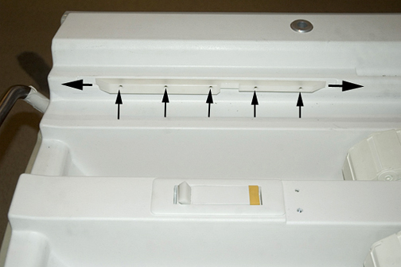

Operating Documentation
Direction 5670000, Rev# 1
Optima MR450w 1.5T Service Methods
Module Version 2.0, Version Date 6/27/08
Operating Documentation |
| Required Persons | Preliminary Reqs | Procedure | Finalization |
|---|---|---|---|
| 1 | 30 mins |
The cradle is locked in the home position by a latch on the table bridge that engages a notch in the cradle guide rail at the rear of the table. The cradle should be able to engage this notch just enough, without extra force, when pushed to the home position, yet it must engage it tight enough so the table top will not move on the Patient Table when it is undocked.
| Item | Qty | Effectivity | Part# | Manufacturer | |
|---|---|---|---|---|---|
| Non-magnetic Tool Kit | 1 | - | 5112581 | - | |
Unlatch LPCA from cradle and move LPCA into bore (out of way).
To manually move cradle forward on table top, refer to the Removing Cradle Assembly procedure.
On one side, loosen five screws securing guide rail and slide guide rail forward or backward as required. Tighten screws.
Illustration 1: Guide Rail Latch

Repeat Step 2 for other side of table.
Replace cradle onto Patient Table and reattach LPCA to cradle.
No finalization steps.